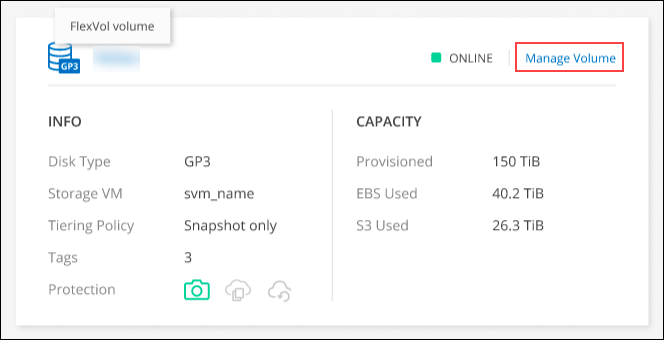

发行说明
发行说明
管理现有卷
 建议更改
建议更改
通过BlueXP、您可以管理卷和CIFS服务器。它还会提示您移动卷以避免容量问题。
管理卷
您可以在存储需求发生变化时管理卷。您可以查看、编辑、克隆、恢复和删除卷。
-
从左侧导航菜单中、选择*存储>画布*。
-
在 " 画布 " 页面上，双击要管理卷的 Cloud Volumes ONTAP 工作环境。
-
在工作环境中、单击*卷*选项卡。

-
在卷选项卡上、导航到所需的卷标题、然后单击*管理卷*以访问管理卷右侧面板。
任务 Action 查看有关卷的信息
在管理卷面板的卷操作下、单击*查看卷详细信息*。
获取 NFS 挂载命令
-
在管理卷面板的卷操作下、单击*挂载命令*。
-
单击 * 复制 * 。
克隆卷
-
在管理卷面板的卷操作下、单击*克隆卷*。
-
根据需要修改克隆名称，然后单击 * 克隆 * 。
此过程将创建 FlexClone 卷。FlexClone 卷是一个可写的时间点副本、节省空间、因为它对元数据使用少量空间、然后仅在更改或添加数据时占用额外空间。
要了解有关 FlexClone 卷的详细信息，请参见 "《 ONTAP 9 逻辑存储管理指南》"。
编辑卷标记(仅限读写卷)
-
在管理卷面板的卷操作下、单击*编辑卷标记*以修改分配给选定卷的卷标记。
-
在提供的字段下输入卷标记密钥和值。
-
要包括其他标记、请单击*添加新标记*。
-
单击 * 保存 * 。
编辑卷（仅限读写卷）
-
在管理卷面板的卷操作下、单击*编辑卷设置*
-
修改卷的Snapshot策略、NFS协议版本、NFS访问控制列表(导出策略)或共享权限、然后单击*应用*。

如果需要自定义 Snapshot 策略，可以使用 System Manager 创建这些策略。 删除卷
-
在管理卷面板的卷操作下、单击*删除卷*。
-
在删除卷窗口下、输入要删除的卷的名称。
-
再次单击 * 删除 * 进行确认。
按需创建 Snapshot 副本
-
在管理卷面板的保护操作下、单击*创建Snapshot副本*。
-
根据需要更改名称，然后单击 * 创建 * 。
将数据从 Snapshot 副本恢复到新卷
-
在管理卷面板的保护操作下、单击*从Snapshot副本还原*。
-
选择 Snapshot 副本，输入新卷的名称，然后单击 * 还原 * 。
更改底层磁盘类型
-
在管理卷面板的高级操作下、单击*更改磁盘类型*。
-
选择磁盘类型，然后单击 * 更改 * 。
BlueXP会将卷移动到使用选定磁盘类型的现有聚合、或者为卷创建新聚合。 更改分层策略
-
在管理卷面板的高级操作下、单击*更改分层策略*。
-
选择其他策略，然后单击 * 更改 * 。
BlueXP会将卷移动到使用选定磁盘类型进行分层的现有聚合、或者为卷创建新聚合。 删除卷
-
选择一个卷，然后单击 * 删除 * 。
-
在对话框中键入卷的名称。
-
再次单击 * 删除 * 进行确认。
-
调整卷大小
默认情况下，卷在空间不足时会自动增长到最大大小。默认值为 1 ， 000 ，这意味着卷可以增长到其大小的 11 倍。此值可在 Connector 的设置中进行配置。
如果需要调整卷大小，可以通过执行此操作 "ONTAP 系统管理器"。调整卷大小时，请务必考虑系统的容量限制。转至 "《 Cloud Volumes ONTAP 发行说明》" 有关详细信息：
修改 CIFS 服务器
如果您更改了 DNS 服务器或 Active Directory 域、则需要在 Cloud Volumes ONTAP 中修改 CIFS 服务器、以便它可以继续为客户端提供存储。
-
从工作环境的概述选项卡中、单击右侧面板下的功能选项卡。
-
在CIFS设置字段下、单击*铅笔图标*以显示CIFS设置窗口。
-
指定 CIFS 服务器的设置：
任务 Action 选择Storage VM (SVM)
选择Cloud Volume ONTAP Storage Virtual Machine (SVM)可显示其已配置的CIFS信息。
要加入的 Active Directory 域
您希望 CIFS 服务器加入的 Active Directory （ AD ）域的 FQDN 。
授权加入域的凭据
具有足够权限将计算机添加到 AD 域中指定组织单位 (OU) 的 Windows 帐户的名称和密码。
DNS 主 IP 地址和次 IP 地址
为 CIFS 服务器提供名称解析的 DNS 服务器的 IP 地址。
列出的 DNS 服务器必须包含为 CIFS 服务器将加入的域定位 Active Directory LDAP 服务器和域控制器所需的服务位置记录（服务位置记录）。
ifdef：：gcp[]
如果要配置 Google Managed Active Directory ，则默认情况下可以使用 169.254.169.254 IP 地址访问 AD 。
字节名称：：：gcp[]DNS 域
Cloud Volumes ONTAP Storage Virtual Machine （ SVM ）的 DNS 域。在大多数情况下，域与 AD 域相同。
CIFS server NetBIOS name
在 AD 域中唯一的 CIFS 服务器名称。
组织单位
AD 域中要与 CIFS 服务器关联的组织单元。默认值为 cn = computers 。
-
要将 Google Managed Microsoft AD 配置为 Cloud Volumes ONTAP 的 AD 服务器，请在此字段中输入 * OU=Computers ， OU=Cloud* 。
"Google Cloud 文档： Google Managed Microsoft AD 中的组织单位"
-
-
单击*设置*。
Cloud Volumes ONTAP 会根据更改更新 CIFS 服务器。
移动卷
移动卷以提高容量利用率，提高性能并满足服务级别协议的要求。
您可以在 System Manager 中移动卷，方法是选择卷和目标聚合，启动卷移动操作，并可选择监控卷移动作业。使用 System Manager 时，卷移动操作会自动完成。
-
使用 System Manager 或 CLI 将卷移动到聚合。
在大多数情况下，您可以使用 System Manager 移动卷。
有关说明，请参见 "《 ONTAP 9 卷移动快速指南》"。
当BlueXP显示Action Required消息时移动卷
BlueXP可能会显示一条"需要操作"消息、指出移动卷对于避免容量问题是必要的、但您需要自行更正问题描述。如果发生这种情况，您需要确定如何更正问题、然后移动一个或多个卷。

|
当聚合已达到90%的已用容量时、BlueXP会显示这些"需要执行操作"消息。如果启用了数据分层，则在聚合已达到 80% 已用容量时会显示消息。默认情况下，为数据分层预留 10% 的可用空间。 "详细了解数据分层的可用空间比率"。 |
-
根据您的分析、移动卷以避免容量问题：
确定如何更正容量问题
如果BlueXP无法提供移动卷以避免容量问题的建议、您必须确定需要移动的卷、以及是否应将其移动到同一系统上的另一个聚合或另一个系统。
-
查看“ Action Required ”（需要操作）消息中的高级信息以确定已达到其容量限制的聚合。
例如，高级信息应显示类似于以下内容的内容：聚合 aggr1 已达到其容量限制。
-
确定要从聚合中移出的一个或多个卷：
-
在工作环境中、单击*聚合选项卡*。
-
导航到所需的聚合图块、然后单击*。 (椭圆图标)>查看聚合详细信息*。
-
在聚合详细信息屏幕的概述选项卡下、查看每个卷的大小、然后选择一个或多个卷以从聚合中移出。
您应该选择足够大的卷来释放聚合中的空间、以便将来避免出现额外的容量问题。

-
-
如果系统未达到磁盘限制、则应将卷移动到同一系统上的现有聚合或新聚合。
有关详细信息，请参见 将卷移动到另一个聚合以避免容量问题。
-
如果系统已达到磁盘限制，请执行以下任一操作：
-
删除所有未使用的卷。
-
重新排列卷以释放聚合上的空间。
有关详细信息，请参见 将卷移动到另一个聚合以避免容量问题。
-
将两个或多个卷移动到另一个具有空间的系统。
有关详细信息，请参见 将卷移动到另一个聚合以避免容量问题。
-
将卷移动到另一个系统以避免容量问题
您可以将一个或多个卷移动到另一个 Cloud Volumes ONTAP 系统以避免容量问题。如果系统达到其磁盘限制，则可能需要执行此操作。
您可以按照此任务中的步骤更正以下需要执行的操作消息：
要避免容量问题、必须移动卷；但是、BlueXP无法为您执行此操作、因为系统已达到磁盘限制。
-
确定具有可用容量的 Cloud Volumes ONTAP 系统或部署新系统。
-
将源工作环境拖放到目标工作环境中以执行卷的一次性数据复制。
有关详细信息，请参见 "在系统之间复制数据"。
-
转到复制状态页，然后中断 SnapMirror 关系、将复制的卷从数据保护卷转换为读 / 写卷。
有关详细信息，请参见 "管理数据复制计划和关系"。
-
配置卷以进行数据访问。
有关为数据访问配置目标卷的信息，请参见 "《 ONTAP 9 卷灾难恢复快速指南》"。
-
删除原始卷。
有关详细信息，请参见 "管理卷"。
将卷移动到另一个聚合以避免容量问题
您可以将一个或多个卷移动到另一个聚合中以避免容量问题。
您可以按照此任务中的步骤更正以下需要执行的操作消息：
要避免容量问题、必须移动两个或更多卷；但是、BlueXP无法为您执行此操作。
-
验证现有聚合是否具有需要移动的卷的可用容量：
-
在工作环境中、单击*聚合选项卡*。
-
导航到所需的聚合图块、然后单击*。 (椭圆图标)>查看聚合详细信息*。
-
在聚合区块下、查看可用容量(已配置大小减去已用聚合容量)。

-
-
如果需要，请将磁盘添加到现有聚合：
-
选择聚合、然后单击*。 (椭圆图标)>添加磁盘*。
-
选择要添加的磁盘数，然后单击 * 添加 * 。
-
-
如果没有聚合可用容量，请创建新聚合。
有关详细信息，请参见 "创建聚合"。
-
使用 System Manager 或 CLI 将卷移动到聚合。
-
在大多数情况下，您可以使用 System Manager 移动卷。
有关说明，请参见 "《 ONTAP 9 卷移动快速指南》"。
卷移动速度可能较慢的原因
如果 Cloud Volumes ONTAP 满足以下任一条件，则移动卷所需时间可能会比预期长：
-
此卷为克隆卷。
-
卷是克隆的父卷。
-
源聚合或目标聚合具有一个吞吐量优化型 HDD （ st1 ）磁盘。
-
其中一个聚合对对象使用的命名方案较旧。两个聚合必须使用相同的名称格式。
如果在 9.4 版或更早版本中的聚合上启用了数据分层，则会使用较早的命名方案。
-
源聚合和目标聚合上的加密设置不匹配，或者正在重新设置密钥。
-
在卷移动时指定了 -tiering-policy 选项以更改分层策略。
-
在卷移动时指定了 -generate-destination-key 选项。
查看FlexGroup 卷
您可以直接通过BlueXP中的卷选项卡查看通过命令行界面或System Manager创建的FlexGroup 卷。与为FlexVol 卷提供的信息相同、BlueXP通过专用的卷图块提供有关已创建的跳蚤组卷的详细信息。在卷磁贴下、您可以通过图标的悬停文本来标识每个FlexGroup 卷组。此外、您还可以通过卷模式列在卷列表视图下标识FlexGroup 卷并对其进行排序。

|
|
目前、您只能在BlueXP下查看现有FlexGroup 卷。在BlueXP中创建FlexGroup 卷的功能不可用、但计划在未来版本中使用。 |